Jayden Ma
Poughkeepsie, NY - Boston, MA
Boston University
Class of 2022
Mechanical and Aerospace Engineer
Poughkeepsie, NY - Boston, MA
Boston University
Class of 2022
Mechanical and Aerospace Engineer
Beyond my main aerospace projects, I've developed my knowledge in mechanical engineering with proficiency in experimentation, manufacturing, electronics, and programming in smaller projects where these skills play a central role.
Spring 2018 - In high school, I used Stencyl to develop a Flash space exploration platformer game, and also designed the art and music. The game featured the protagonist defending his planet from invaders in a set of levels, and was named Spaceman. I finished designing most of the major game mechanics typical of a platformer, which included character movement in two dimensions, health system, environment interaction, and enemy AI. I also completed the design of a prologue cutscene and one game level dropping the project in the interest of focusing on mechanical engineering in college.
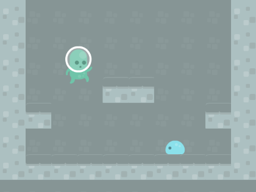(a) Prototype test level showing protagonist and enemies, using downloaded art. (b) Gameplay of first tutorial level showing game mechanics of moving around and avoiding enemies, using my own drawn art.
Fall 2018 - For my freshman design project in college, I programmed and completed a Kinect motion-sensor game based on Space Invaders. The coding was based in C# using the GridSandbox template, and I designed the game logic; the motion-control cursor is used to shoot oncoming rows of enemies for score, until all player health is lost. I also drew art to support the project, changing the template from a basic grid to a space environment with spaceships and aliens. Along with earning an A, I was voted and awarded the second best game design in the entire class, which came with the honor of the game being displayed on Boston University's Photonics Center Kinect screen for all students to play.
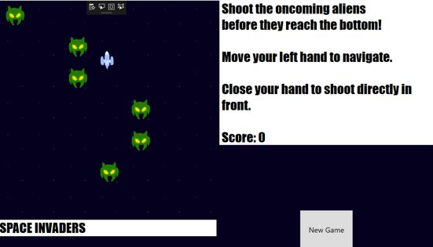(a) Graphical interface shows oncoming aliens and controllable ship. (b) Gameplay video showing game mechanics of shooting endless aliens.
Spring 2019 - In the Boston University Rocket Propulsion Group (BURPG), I was one of two freshmen chosen to build the tank stand for Citadel, a gaseous bipropellant rocket engine test stand. Citadel was built as the testbed for Mortise, a gaseous oxygen-methane spherical rocket engine. The tank stand was a supporting structure that held the propellant tanks for oxygen and methane in place. As I did not design the stand, I quickly learned the context of Citadel and its design requirements to fabricate the tank stand. Using the campus job shop to machine the aluminum and wooden stock, I learned to use the mill, drill, and bandsaw to fabricate braces and panels that would be bolted to the stand. Citadel and Mortise were dropped in favor of designing a new liquid bipropellant rocket, but Citadel was my inaugural project to the team, and I was assigned as a lead designer for the aforementioned liquid rocket, Pursuit, which ended up being my main project on BURPG.
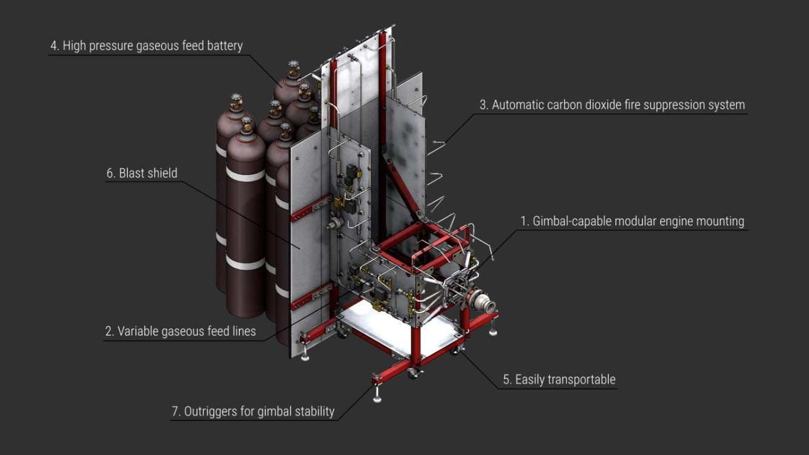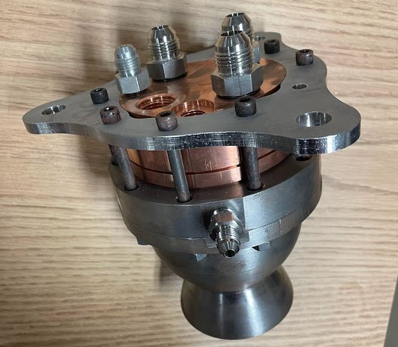(a) CAD of Citadel test stand with component breakdown. (b) Machined Mortise gaseous engine, which Citadel would've been used to test.
Spring 2019 - For my sophomore design project, I designed, manufactured, and tested a feminine hygiene product dispenser with smart sensors; the purpose was to replace outdated and unattractive dispensers on campus. The final prototype included a button-activated dispensing mechanism using Arduino, a cooldown timer to prevent overuse, a photoelectric-based emptiness sensor that sent text messages when depleted, and a lock and key set for the restocking door. With 4 mechanical engineers and 1 biomedical engineer, I took initiative to learn circuits and coding without an electrical or computer engineer, and served as the Arduino lead while the others worked on CAD and machining the mechanisms and housing. Our prototype was successful in demonstrating dispensing of both pads and tampons, while also displaying upgrades from standard dispensers by preventing overuse and notifying when empty, which earned us an A- overall.
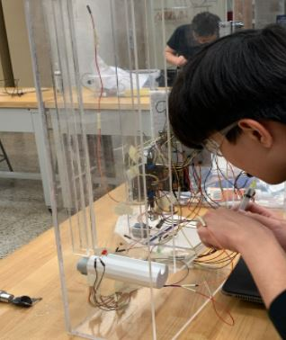(a) Process of wiring the dispenser electromechanical systems. (b) Final prototype successfully dispensing a tampon.
Summer 2019 - I worked in the Bunch Research Group to support research in atomically two-dimensional materials for their superior mechanical properties. I learned membrane production proccesses in mechanical exfoliation of graphene, and chemical vapor deposition for growth of tungsten diselenide (WSe2). I experimented with variables including reactant masses, cook time, and oven temperature to optimize the growth procedure of WSe2 to have large enough membranes for the graduate students to conduct research on. Though I wasn't able to produce membranes of significant sizes, I identified correlations in the variables for increasing size and recorded each experiment, allowing the group to continue the optimization.
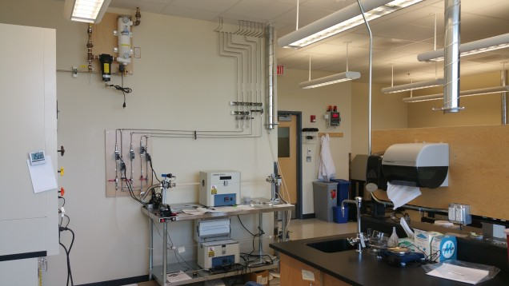Lab space with chemical vapor deposition machines used.
Summer 2019 - Inspired by Google Glass, I designed smartglasses that display text on lenses. The device acts as a lense with a 3D printed electronics housing that can be fitted onto standard prescription glasses. The text is transmitted using an OLED projected onto the lense, while an Android phone adjusts the text using a Bluetooth app I developed with MIT App Inventor. I successfully tested the OLED to display user-custom text and the current time in realtime, with the potential to be a heads-up display for reminders. The challenge was trying to build the final product, due to the special tooling necessary to cut glass and mirror, so I had to drop the project.
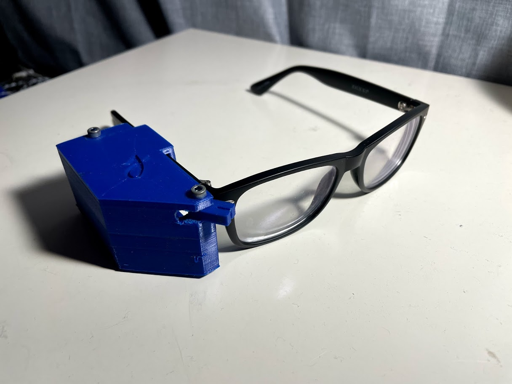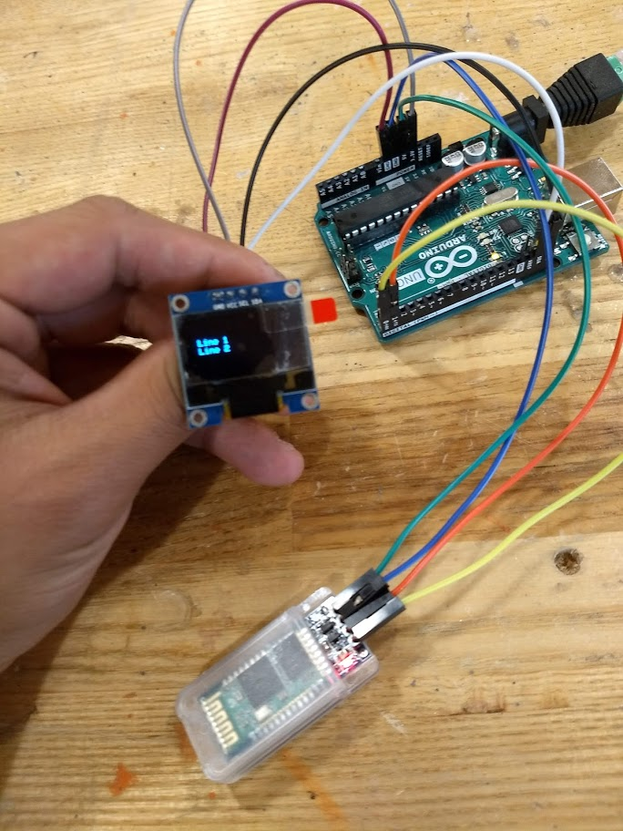(a) Compacted final prototype housed on a pair of prescription glasses. (b) Electronics testing to successfully display text from OLED using Bluetooth.
Summer 2019 - I designed and modeled a robotic gauntlet inspired by Iron Man. I designed it to be additively manufactured, due to not having better machines for the custom geometry of the gauntlet, and put in pins for freedom of the finger joints. It is a highlight of my CAD, as I tried to keep it sleek and attractive like the movie model. I also designed it to be fitted to my hand, and had to constantly test the components to iterate on the dimensions. With a NeoPixel ring and a muscle flex sensor, the idea was to have it act as a flashlight, whenever the forearm was flexed, like the superhero's repulsor technology. Though I finalized the palm armor, this was dropped after the summer to focus on my projects in aerospace engineering when I began to have more experience with rocket design.
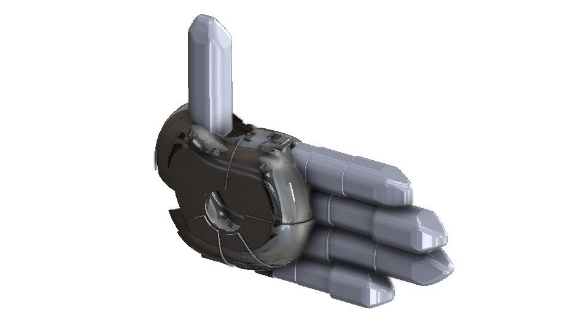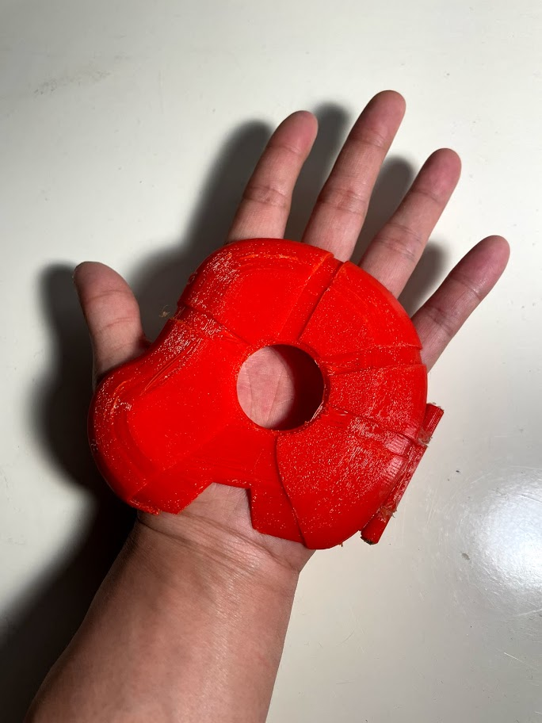(a) CAD assembly of robotic gauntlet. (b) Successful fit check of 3D printed palm.
Fall 2020 - For my junior design project, I developed and manufactured an automated COVID-19 mask dispenser. The product served to tackle a contemporary issue in COVID-19, where current mask dispensers require users to touch the dispenser. We designed a geared roller mechanism, like printers, activated by an ultrasonic sensor. I also designed a photoelectric diode emptiness sensor, which would light up a bright LED when the masks were out of stock. I served as lead Arduino programmer due to the team consisting of 4 mechanical engineers, and I completed the coding and wiring while my teammates designed the housing and geared mechanism. Due to 2 members being remote, I milled and fastened most of the housing and 3D printed the gears and lock. Our project performed its individual functions in contactless dispensing of a single mask and alerting for maintenance when empty. We were given an A- overall.
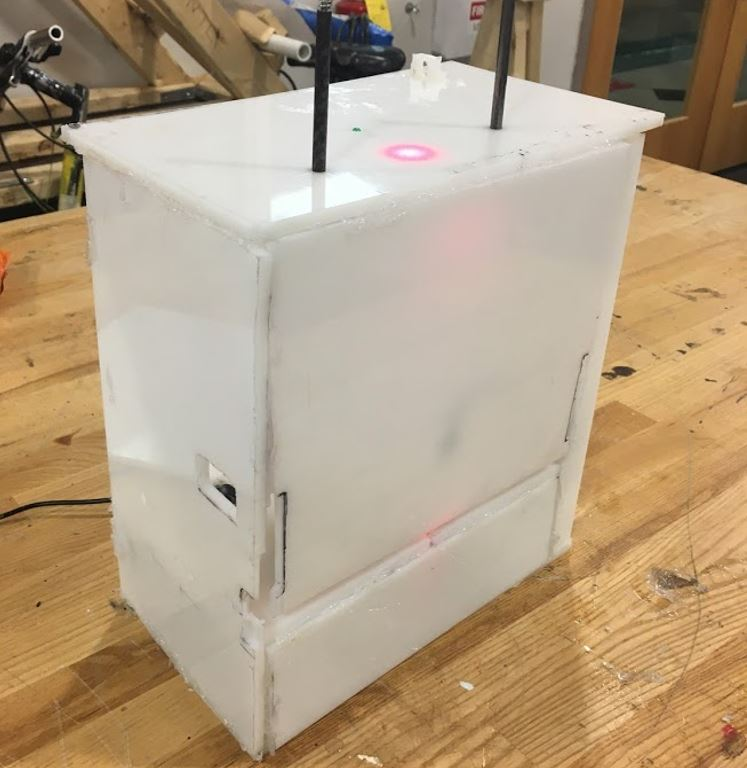(a) Final prototype dispenser made of high-density polyethylene with custom electronics. (b) Final prototype of dispenser successfully dispensing a mask, showing internal gear assembly and out-of-stock LED.
Fall 2021 - In my aircraft design elective, I learned to use a modular pre-made spreadsheet to design a real airplane using calculations for the structures, propulsion, and aerodynamics. Though the calculations were predone, the difficulty was in balancing the tradeoffs into a high-performance plane. With a team of 3 other aerospace engineers, we were able to design a short take-off and landing single-engine piston bushplane that outperformed current STOL bushplanes based on our research, due to current planes like the Aviat Husky having been designed with previous-generation technology. The team won the award for Best Overall Design in the semester out of the entire class, and was awarded an A.
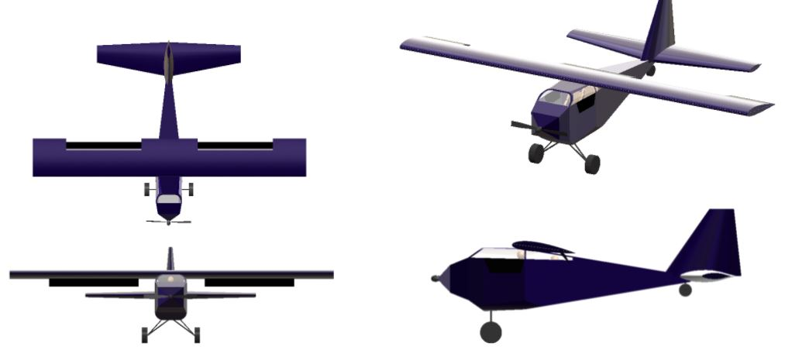CAD assembly of the designed STOL bushplane, named BUSH.
Spring 2021 - As BURPG got closer to their first engine hotfire since 2017, as the fluid systems lead I advised on the rebuild and retrofitting of the fluid system of the Horizontal Test Stand that had been built in 2018 for liquid engines, and preparations for test operations. Upgrades that I advised on included a fire suppression system designed for high-flow carbon dioxide and an automated pressure relief system to vent nitrogen if the control system loses power, which were quickly built in. I also used my internship experience to advise on oxidizer cleaning components and helped standardize ultrasonic cleaning and drying procedures for the first time; in the process I learned and guided the team to disassemble and reassemble parts of the stand, which would be necessary for transport to the test site. I also briefly modified the test stand to allow for mass flow testing using water for the injector of the next-generation ablative Lotus engine, that is currently being designed.
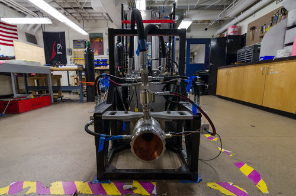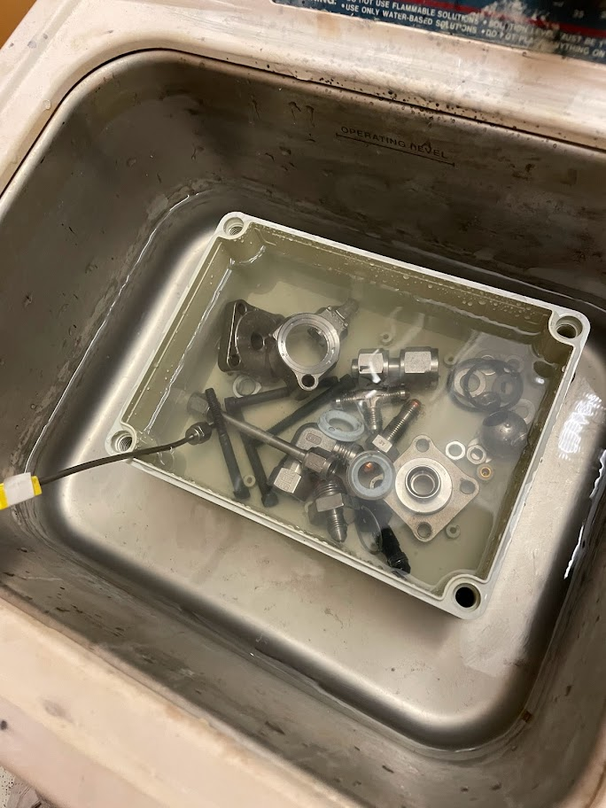(a) Horizontal Test Stand mated with the liquid engine Iron Lotus. (b) Oxidizer cleaning disassembled test stand components.